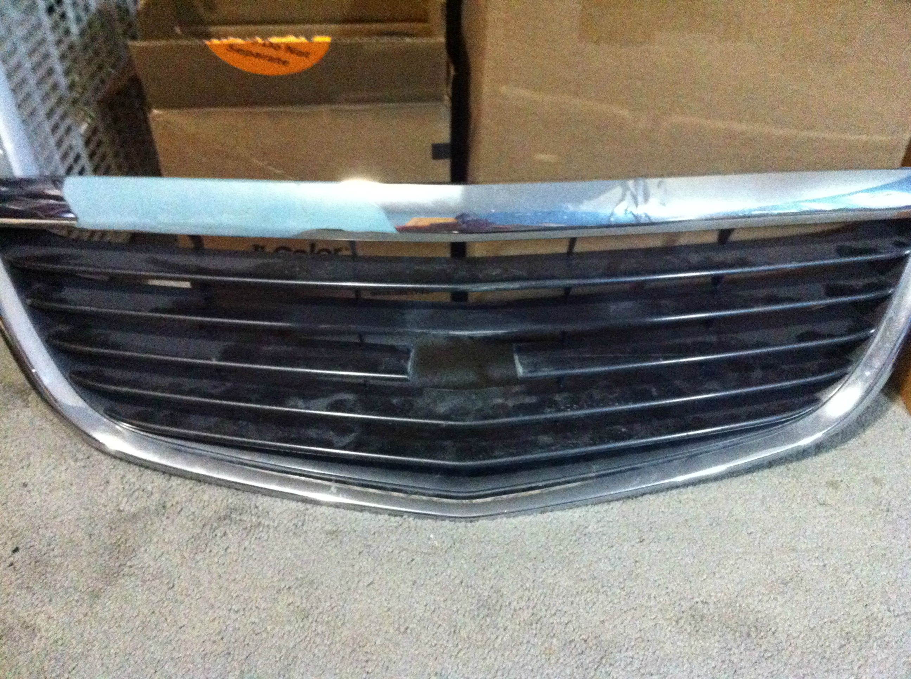
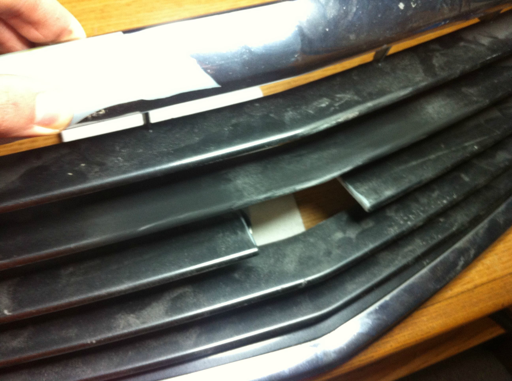
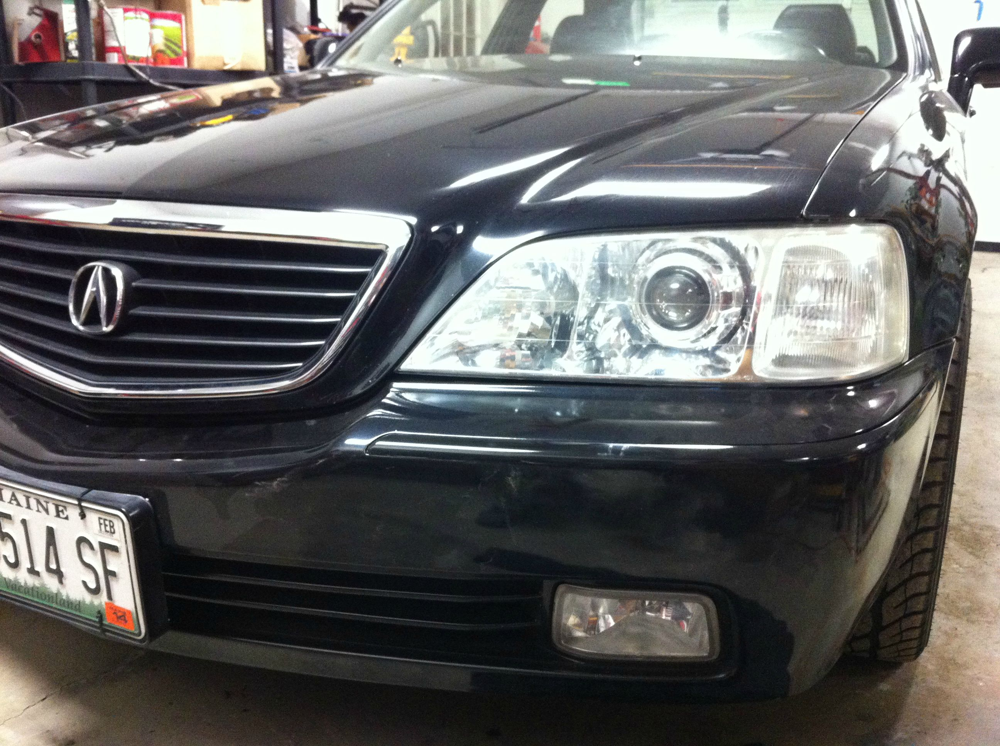

The projector retrofit is finally coming to an end.

There isn't too much gap between the reflector and shroud which isn't too bad.

The new D2S bulbs also came in. They're much brighter than the D2Rs. Vertical height is different because I didn't bother to align that since it was so cold out. All glare in the second photo is due to the ice, and lack of shrouds around the projectors.

My side project is making good progress as well.
  
Once the headlights are done I'll be moving onto the cluster followed by an idea I have for the tail lights.
With a bit more work I reinstalled the headlights and bumper.